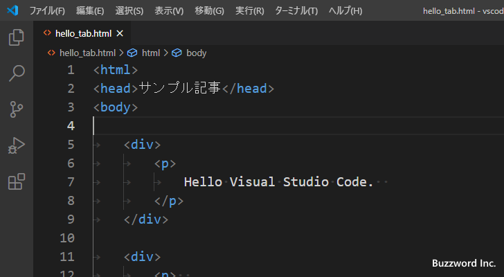

タブキーを押したときにスペースに変換するのかに関する設定
Visual Studio Code のエディターではタブキーを押したときにタブとしてファイルに入力するか、それともスペースに変換して入力するのかを選択することができます。またタブがスペース何文字分に相当するのかについても設定できます。ここでは Visual Studio Code のエディターでタブキーを押したときにどのように扱うのかに関する設定方法について解説します。
タブを自動でスペースに変換するかどうかの設定
Visual Studio Code のエディターでタブキーを押したときにタブとしてそのまま入力するか、それともスペースに変換して入力するかに関する設定です。デフォルトの設定ではタブはスペースに自動的に変換されて入力されます。
設定を変更するには「ファイル」メニューの中にある「ユーザー設定」をクリックし、さらに表示されたサブメニューの中から「設定」をクリックしてください。

Visual Studio Code の設定画面が表示されます。
画面上部の検索ボックスに「insert spaces」と入力してください。いくつか設定項目が表示されますが、「Editor:Insert Spaces」の設定項目が関係する設定項目です。
「Editor:Insert Spaces」のチェックボックスがチェックされているとタブがスペースに変換されます。それではチェックを外してみます。
これでタブキーを押したときにそのままタブが入力されます。
このようにタブが自動的にスペースに変換されることがなくなりました。
タブを何文字のスペースに変換するかの設定
タブキーを押したときに、スペース何文字分に相当するのかを設定する方法です。先ほどと同じ手順で Visual Studio Code の設定画面が表示したあと、画面上部の検索ボックスに「tabsize」と入力してください。いくつか設定項目が表示されますが、「Editor:Tab Size」の設定項目が関係する設定項目です。
デフォルトでは 4 文字に設定されています。タブキーを押すたびに文の先頭から 4 文字目、 8 文字目、 12 文字目など現在のカーソルの位置よりあとの 4 の倍数のところに移動します。タブは一般的に 2 文字、 4 文字、 8 文字のスペースに相当するように設定するケースが多いです。今回は 8 文字に変更してみます。
新しいファイルでタブを押すと、 8 の倍数の位置に移動します。(スペースに変換する設定にしているので 8 の倍数の位置に移動するようにスペースが必要なだけ入力されます)。

現在設定されているインデントの方式を確認する
タブキーを押したときにスペースに変換されて入力されるのか、それともタブのまま入力されるのかの設定や、タブがスペース何文字分に相当するのかの設定はエディターの右下ステータスバーに表示されています。
例えばタブキーを押したときにスペースに変換され、タブがスペース 2 文字分相当の設定になっている場合、「スペース:2」と表示されます。
またタブキーを押したときにタブのまま入力され、タブがスペース 8 文字分相当の設定になっている場合、「タブのサイズ:8」と表示されます。
このようにステータスバーを確認することで、現在どのような設定になっているのかを確認できます。
開いたファイルで使われているインデントの方式を使用する
新しいファイルを作成した場合には、「Editor:Insert Spaces」と「Editor:Tab Size」の設定に従ってインデントの方式が決まりますが、既に作成されているファイルを開いた場合、設定項目の「Editer:Detect Indetation」が有効になっていると開いたファイルで使われているインデント方式を読み取って自動的に「Editor:Insert Spaces」と「Editor:Tab Size」の設定を上書きします。
実際に試してみます。 Visual Studio Code の設定画面が表示したあと、画面上部の検索ボックスに「Indetation」と入力してください。「Editer:Detect Indetation」の設定項目が表示されます。

デフォルトではチェックが入っている状態です。その為、既存のファイルをエディターで開いた場合、「Editor:Insert Spaces」と「Editor:Tab Size」に設定されている値に関わらず、開いたファイルで使用しているインデントの方式を使用します。
例えばタブキーを押したときにスペースに変換され、タブはスペース 4 文字相当のように設定されていたとします。新しいファイルを開いた場合は、設定した内容が使用されるためステータスバーを確認すると「スペース:4」と表示されています。
ところがインデントとしてスペース 2 文字を使って記述されているファイルを開くと、 Visual Studio Code での設定に関わらずインデントの方式が「スペース:2」に自動的に変更されます。
またインデントとしてタブをそのまま入力し、タブに対してスペース 4 文字を使って記述されているファイルを開くと、 Visual Studio Code での設定に関わらずインデントの方式が「タブのサイズ:4」に自動的に変更されます。

このように既存のファイルを開いた場合には、そのファイルのインデントの方式を自動的に使うようになるため、 Visual Studio Code でインデントに関する設定を行っても反映されません。もし開いたファイルで使われているインデントの方式とは関係なく、設定したインデントの方式を使用したいのであれば「Editer:Detect Indetation」の設定項目のチェックを外してください。
-- --
Visual Studio Code のエディターでタブキーを押したときにどのように扱うのかに関する設定方法について解説しました。
( Written by Tatsuo Ikura )

著者 / TATSUO IKURA
初心者～中級者の方を対象としたプログラミング方法や開発環境の構築の解説を行うサイトの運営を行っています。